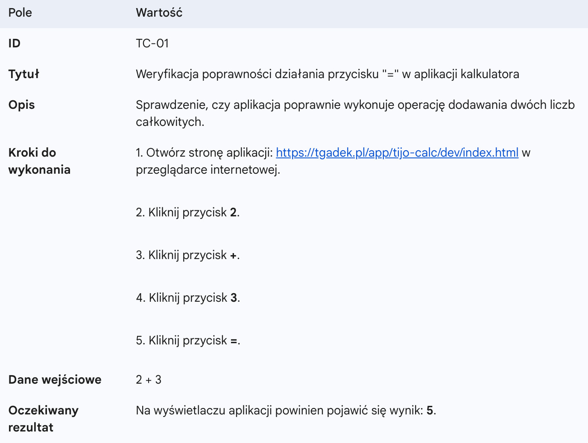
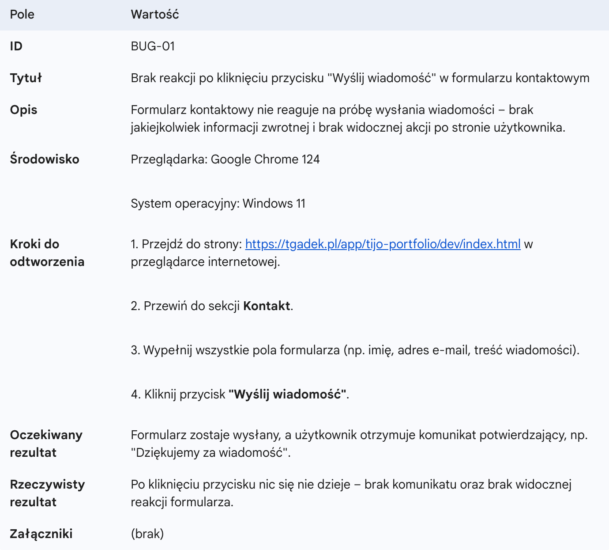

L#11: Test Case & Bug Report.
Test Case (Przypadek Testowy) to dokument służący do weryfikacji, czy system w odpowiedzi na konkretne akcje działa zgodnie z założeniami. Ułatwia systematyczne i powtarzalne testowanie.

Bug Report (Zgłoszenie Błędu) to raport opisujący niezgodność między działaniem faktycznym a oczekiwanym. Precyzyjne zgłoszenie pozwala programiście sprawnie odtworzyć i usunąć usterkę.

Celem laboratorium jest zapoznanie się z procesem dokumentowania przypadków testowych oraz tworzenia raportów o błędach z wykorzystaniem narzędzia Trello.
Masz do dyspozycji dwie aplikacje w wersji DEV (do testowania) i PROD (jako dokumentacja referencyjna):
Twoim pierwszym krokiem jest założenie konta w aplikacji Trello. Dla każdej aplikacji utwórz oddzielną tablicę, a następnie przeprowadź ich analizę porównawczą (wersja PROD stanowi bezbłędny wzorzec). Wszelkie zauważone różnice w działaniu są kluczem do sporządzenia przypadków testowych (Test Case) i na ich podstawie raportów błędów (Bug Reports).
W każdej tablicy utwórz kolumny (jedna tablica = jeden projekt):
Testy pozwalają wykryć błędy i upewnić się, że produkt działa zgodnie z oczekiwaniami użytkowników. Rzetelne dokumentowanie przypadków testowych i zgłaszanie błędów to podstawowe narzędzia testera, które pozwalają na efektywną współpracę z programistami i budowanie produktów o najwyższej jakości.
Strona główna